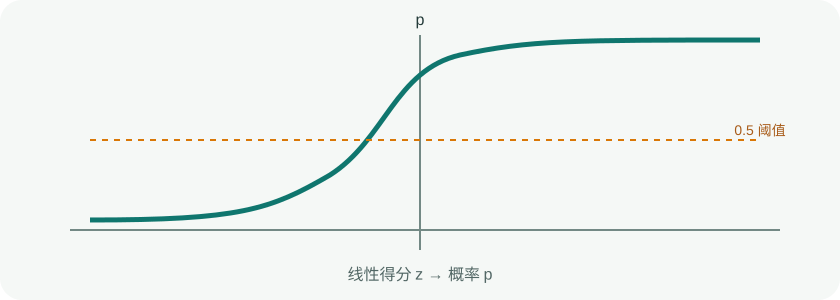

判断一笔交易是否欺诈，模型需要输出一个介于 0 和 1 之间的概率，而不是任意实数。逻辑回归通过 logit 链接函数把线性预测值映射到概率空间。

20.1 为什么不能对分类问题用线性回归
假设因变量 y 取值只有 0 和 1。如果我们强行做线性回归 y = β₀ + β₁x，会出现两个严重问题：
- 预测值超出范围：线性回归可以预测出负值或者大于 1 的值，这些值无法被解释为概率。
- 误差项违反假设：线性回归要求误差正态分布且方差齐性，但二分类数据的误差是伯努利分布，方差随均值变化，根本不符合这些条件。
换句话说，线性回归对分类问题就像用螺丝刀钉钉子——不是完全不行，但结果会很糟糕。
20.2 Odds 与 Logit：从概率到对数几率
逻辑回归的核心思想是将概率 p 映射到整个实数轴上。这个映射分为两步：
- Odds（几率）： odds = p / (1-p)。当 p=0.5 时 odds=1；p=0.9 时 odds=9；p=0.1 时 odds=0.11。取值从 0 到 ∞。
- Logit（对数几率）： logit(p) = ln(odds) = ln(p/(1-p))。取对数后，取值从 -∞ 到 +∞。
逻辑回归模型就是假设 logit(p) 是自变量的线性组合：
logit(p) = β₀ + β₁x₁ + ... + βₚxₚ反过来，p = 1 / (1 + e^{-(β₀ + β₁x₁ + ... + βₚxₚ)})，这就是著名的sigmoid 函数，它将线性组合压缩到了 0 到 1 之间。
20.3 逻辑回归的系数解释
逻辑回归的系数不像线性回归那样直接解释为"边际效应"。更自然的解释方式是：
- 系数 βⱼ 表示 xⱼ 增加一个单位时，log-odds（对数几率）的变化量。
- exp(βⱼ) 表示 xⱼ 增加一个单位时，odds 的倍数变化（称为 Odds Ratio，OR）。
| 变量 | 系数 (β) | Odds Ratio (exp(β)) | 解释 |
|---|---|---|---|
| 年龄（岁） | -0.03 | 0.97 | 每增加一岁，点击的 odds 减少约 3% |
| 历史购买次数 | 0.21 | 1.23 | 每多一次历史购买，点击的 odds 增加 23% |
| 是否会员 | 0.85 | 2.34 | 会员的点击 odds 是非会员的 2.34 倍 |
20.4 混淆矩阵、ROC 曲线与 AUC
逻辑回归输出的是概率，我们需要选择一个阈值将概率转化为类别预测。评估分类效果的核心工具包括：
- 混淆矩阵（Confusion Matrix）： 四格表，展示 TP（真阳性）、FP（假阳性）、FN（假阴性）、TN（真阴性）。
- ROC 曲线： 以 FPR（假阳性率）为横轴、TPR（真阳性率/召回率）为纵轴的折线图。对角线代表随机猜测，曲线越向左上角弯曲越好。
- AUC（Area Under the Curve）： ROC 曲线下的面积，取值 0.5~1。0.5 是随机，0.8+ 是好的模型，1 是完美。
20.5 阈值选择的艺术：不是 0.5 就一定好
你一定以为阈值设为 0.5 是自然的选择。但现实世界往往更复杂：
- 在疾病筛查中，我们宁可有假阳性也不愿漏掉真患者，所以阈值会设得比较低（比如 0.1），提高召回率（Recall）。
- 在垃圾邮件检测中，我们宁可放走少数垃圾邮件也不愿误删正常邮件，所以阈值会设得比较高（比如 0.9），提高精确率（Precision）。
阈值的选择本质上是成本收益分析，需要在 Recall 和 Precision 之间做权衡。
import numpy as np
import pandas as pd
from sklearn.linear_model import LogisticRegression
from sklearn.model_selection import train_test_split
from sklearn.metrics import confusion_matrix, roc_curve, auc, classification_report
import matplotlib.pyplot as plt
# 模拟数据：预测用户是否点击广告
np.random.seed(42)
n = 1000
data = pd.DataFrame({
'年龄': np.random.randint(18, 65, n),
'历史点击': np.random.poisson(3, n),
'收入对数': np.random.normal(5, 1, n),
})
# 真实关系
log_odds = -2 + 0.05 * data['年龄'] + 0.3 * data['历史点击'] + 0.4 * data['收入对数']
prob = 1 / (1 + np.exp(-log_odds))
data['点击'] = np.random.binomial(1, prob)
X_train, X_test, y_train, y_test = train_test_split(
data[['年龄', '历史点击', '收入对数']], data['点击'],
test_size=0.3, random_state=42
)
model = LogisticRegression()
model.fit(X_train, y_train)
y_pred = model.predict(X_test)
y_prob = model.predict_proba(X_test)[:, 1]
# 混淆矩阵
print(confusion_matrix(y_test, y_pred))
print(classification_report(y_test, y_pred))
# ROC & AUC
fpr, tpr, _ = roc_curve(y_test, y_prob)
roc_auc = auc(fpr, tpr)
print(f"AUC: {roc_auc:.3f}")
# 绘制 ROC 曲线
plt.plot(fpr, tpr, label=f'ROC (AUC = {roc_auc:.3f})')
plt.plot([0, 1], [0, 1], 'k--')
plt.xlim([0, 1]); plt.ylim([0, 1])
plt.xlabel('假阳性率 (FPR)')
plt.ylabel('真阳性率 (TPR)')
plt.title('ROC 曲线')
plt.legend(loc='lower right')
plt.show()这一章我们学习了逻辑回归——为什么分类问题不能用线性回归、odds 和 logit 转换的原理、系数解释、混淆矩阵与 ROC 曲线、以及阈值选择的艺术。下一章我们将进入另一个经典统计工具：方差分析（ANOVA），它专门用来比较多个组的均值是否存在显著差异。
CORE RELATION
本章核心关系
z 通常是截距与特征线性组合；概率阈值用于决策，不改变模型本身的概率估计。
线性得分如何变成概率？
调整 z，观察 sigmoid 输出。概率越过 0.5 只是默认阈值示例，不一定是最佳业务决策。
教学模拟：用于理解概念与方向，不替代真实数据分析、正式功效计算或研究设计审查。
TAKEAWAYS
本章要记住的三件事
- 逻辑回归建模的是 log-odds 与预测变量的线性关系。
- 概率阈值应结合假阳性和假阴性代价选择。
- ROC-AUC 衡量排序区分能力，不直接说明概率校准或业务收益。
FURTHER READING
延伸阅读与核对来源
参考来源用于核对概念与方法。涉及具体数据、历史细节或行业案例时，应回到原始研究或官方文档逐项核验。